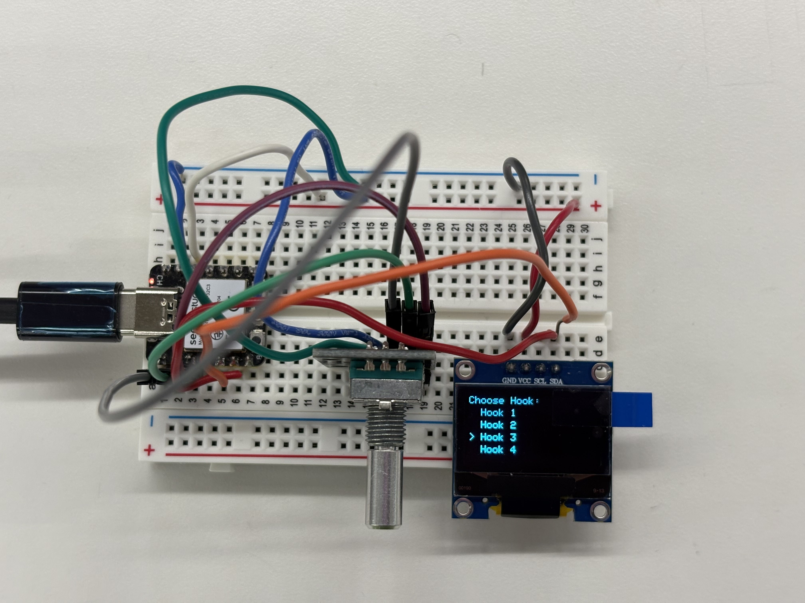

<div class="textcontainer">
<p class="margin"> </p>
<h3>Weeks 10-12: Machine Building</h3>
<h4>Assignment: Build a Drawing Robot</h4>
<div class="flexrow">
<video width="640" height="480" controls>
<source src="drawingX.mp4" type="video/mp4">
</video>
</div>
<p> These weeks' assignment was to build and program a drawing machine. My team and I constructed a robot that plays Tic Tac Toe, featuring an ESP32 camera features that detects the shape of the previous player's move and plays the opposite shape. Details on this week's project can be found on Widmayer's page: </p>
<h4><a class="nav-link" href="https://wtrenteetun31.github.io/PS70/10_machine/documentation/documentation.html" style="color: #000000">Tic Tac Toe Machine</a></h4>
<h4>Final Project Integration</h4>
<p> For my final project integration, I wanted to ensure that the user interface for the jewelry box works. I worked on the code and the circuit for the rotary encoder and the OLED screen.
<p></p>
<p> Currently, there are 4 options for the user to select from and the menu comes up on the OLED screen. The user can scroll through this menu with the rotary encoder and select any option by pressing the button the rotary encoder. When an option is selected, a screen appears that tells the user the system is spinning to their chosen hook. Next steps involve incorporating this interface to replace the button interface I used for my <a href="https://zariaferguson.github.io/PS70ZFerguson/07_outputs/index.html">MVP</a></p>
<div class="flexrow">
<video width="640" height="480" controls>
<source src="rotaryencoderOLED.mp4" type="video/mp4">
</video>
</div>
<p> Here is the code for this circuit: </p>
<pre class="pre prettyprint">
<code class="language-cpp code">
#include &lt;Wire.h&gt;
#include &lt;Adafruit_GFX.h&gt;
#include &lt;Adafruit_SSD1306.h&gt;
#include &lt;ezButton.h&gt;
// OLED setup
#define SCREEN_WIDTH 128
#define SCREEN_HEIGHT 64
Adafruit_SSD1306 oled(SCREEN_WIDTH, SCREEN_HEIGHT, &Wire, -1);
// Rotary encoder pins (ESP32 safe GPIOs)
#define CLK_PIN D2
#define DT_PIN D1
#define SW_PIN D0
#define DIRECTION_CW 0
#define DIRECTION_CCW 1
ezButton button(SW_PIN);
int hookIndex = 1; // current selection (1–4)
int selectedHook = 0; // confirmed selection
int CLK_state;
int prev_CLK_state;
void setup() {
Serial.begin(9600);
// OLED init
if (!oled.begin(SSD1306_SWITCHCAPVCC, 0x3C)) {
Serial.println("OLED failed");
while (1);
}
oled.clearDisplay();
// encoder setup
pinMode(CLK_PIN, INPUT);
pinMode(DT_PIN, INPUT);
button.setDebounceTime(50);
prev_CLK_state = digitalRead(CLK_PIN);
drawUI();
}
void loop() {
button.loop();
readEncoder();
readButton();
}
void readEncoder() {
CLK_state = digitalRead(CLK_PIN);
if (CLK_state != prev_CLK_state && CLK_state == HIGH) {
if (digitalRead(DT_PIN) == HIGH) {
hookIndex--; // CCW
} else {
hookIndex++; // CW
}
// wrap between 1–4
if (hookIndex > 4) hookIndex = 1;
if (hookIndex < 1) hookIndex = 4;
drawUI();
}
prev_CLK_state = CLK_state;
}
void readButton() {
if (button.isPressed()) {
selectedHook = hookIndex;
Serial.print("Selected Hook: ");
Serial.println(selectedHook);
showSelected();
}
}
void drawUI() {
oled.clearDisplay();
oled.setTextSize(1);
oled.setTextColor(WHITE);
oled.setCursor(0, 0);
oled.println("Choose Hook:");
for (int i = 1; i <= 4; i++) {
oled.setCursor(0, 12 * i);
if (i == hookIndex) {
oled.print("> "); // cursor indicator
} else {
oled.print(" ");
}
oled.print("Hook ");
oled.println(i);
}
oled.display();
}
void showSelected() {
oled.clearDisplay();
oled.setTextSize(2);
oled.setTextColor(WHITE);
oled.setCursor(10, 20);
oled.print("Hook ");
oled.println(selectedHook);
oled.setCursor(10, 45);
oled.setTextSize(1);
oled.println("Selected!");
oled.display();
delay(800);
drawUI();
}
</code>
</pre>
</div>